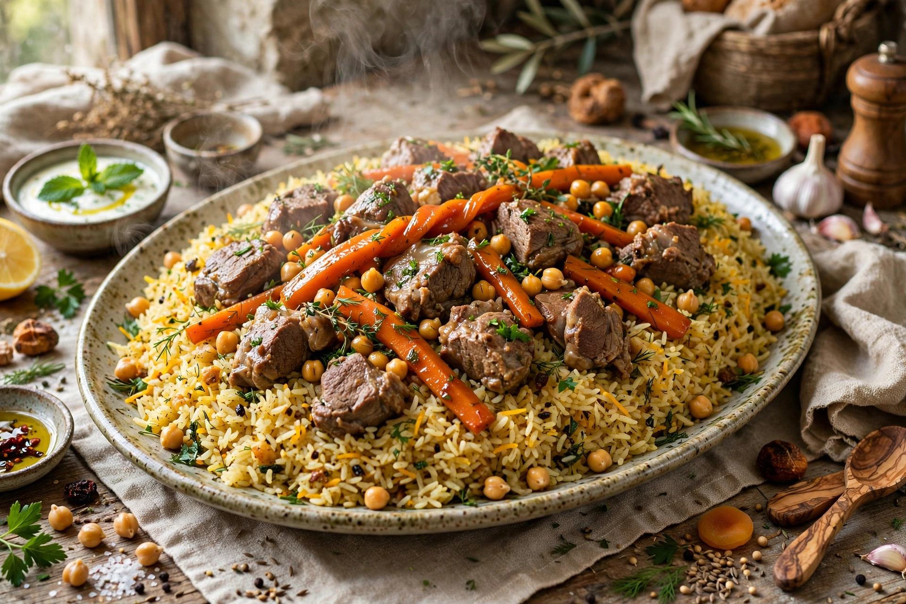

| Type | Rice dish |
| Region | Middle East, Central Asia, South Asia, Balkans, East Africa |
| Main ingredients | Rice, broth, spices, meat and/or vegetables |
| Variations | Plov, pulao, pilau, polo, pilav |

Pilaf (also spelled pilau, pilav, pulao, polo or plov) is a rice dish, or in some regions a wheat dish, whose recipe usually involves cooking in stock or broth, adding spices, and other ingredients such as vegetables or meat. Unlike plain boiled rice, the grains in a pilaf are typically first sautéed in oil or fat so that they remain separate and fluffy rather than sticky.
Pilaf-like dishes are ancient. A recipe attributed to the tradition of Alexander the Great's era describes rice cooked with meat, and the Persian scholar Avicenna (Ibn Sina) is sometimes called the father of modern pilaf for his detailed discussion of rice preparation in medical texts. The Abbasid-era cookbooks of Baghdad contain early recipes for rice cooked in flavoured broth. From Persia the dish spread east into Central and South Asia and west into the Ottoman world, the Balkans and the Mediterranean.
Plov is the national dish of Uzbekistan and is central to Tajik, Turkmen, Kazakh and Kyrgyz cuisines. It is traditionally cooked in a large cast-iron cauldron (qozon) over an open fire, layering rice over carrots, onions and lamb or beef, seasoned with cumin and often topped with chickpeas, raisins or a whole head of garlic. In Uzbekistan, plov is served at weddings and major celebrations and is traditionally eaten by hand from a communal platter.
Pulao in India, Pakistan and Bangladesh is a fragrant rice dish cooked with whole spices such as cardamom, cloves, cinnamon and bay leaves, often with vegetables, paneer or meat. It is closely related to biryani, though biryani is generally more heavily spiced and layered.
Turkish pilav is an everyday staple, often made with orzo or vermicelli browned in butter before the rice is added. Persian polo dishes include elaborate layered preparations, sometimes with a crisp golden crust (tahdig) at the bottom of the pot.
Trinidadian and Guyanese pelau combines rice with pigeon peas, coconut milk and caramelised sugar. East African pilau, especially on the Swahili coast, is richly spiced with cardamom, cloves and cinnamon, reflecting Indian Ocean trade.
The defining technique is cooking the grain in a measured amount of seasoned liquid so that each grain absorbs the broth and stays distinct. Common steps include rinsing or soaking the rice, toasting it in fat with aromatics, adding hot stock, simmering covered without stirring, and resting the dish off the heat before fluffing.